تقنيات دعم ذوي الاحتياجات الخاصة
50 كارت تفاعلي — 10 وحدات — من إعداد فريق متكامل
الوحدة 1
تعريف التقنيات المساعدة
- أدوات، أجهزة، برامج أو خدمات تُصمَّم خصيصًا لدعم ذوي الإعاقات
- تهدف إلى تعويض أو تحسين وظيفة مفقودة أو محدودة
- تشمل حلولًا بسيطة (مثل العصا البيضاء) ومعقدة (مثل أنظمة التحكم بالعين)
- تُطبَّق في مجالات التعليم، العمل، التواصل، والحياة اليومية
- تُعدّ جزءًا أساسيًّا من مفاهيم الدمج والعدالة الاجتماعية
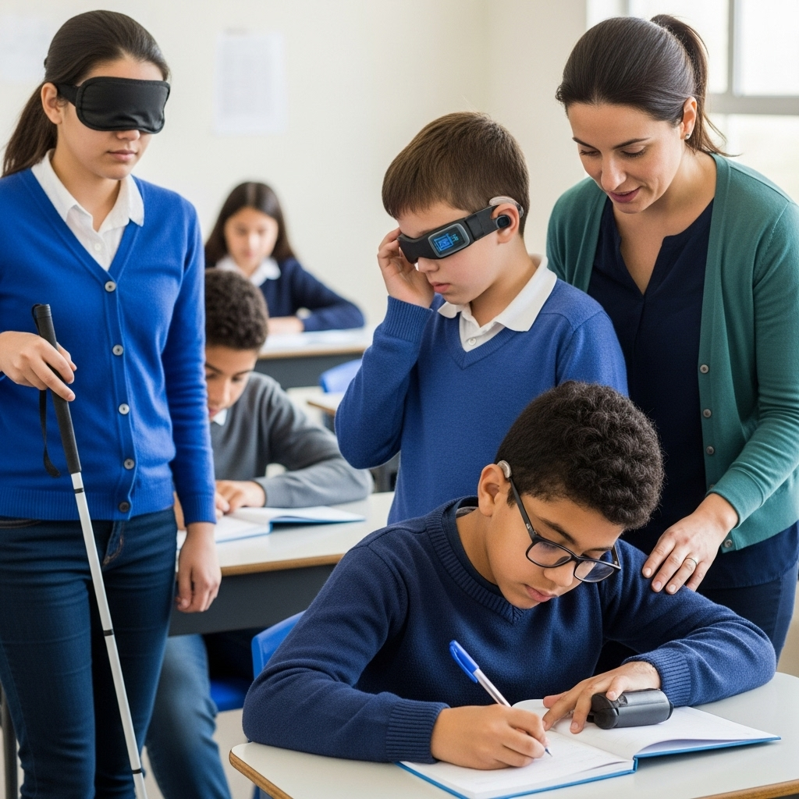
إعداد: عبدالرحمن
الوحدة 1
الأهداف التربوية والاجتماعية
- تمكين الأفراد من الوصول المتكافئ إلى فرص التعليم والتعلّم
- تعزيز الاستقلالية الشخصية والاعتماد على الذات
- تقليل الحواجز البيئية والرقمية التي تعيق المشاركة المجتمعية
- دعم مبدأ "التعليم للجميع" (Education for All)
- بناء مجتمعات أكثر شمولًا وعدالة عبر التكنولوجيا الدامجة
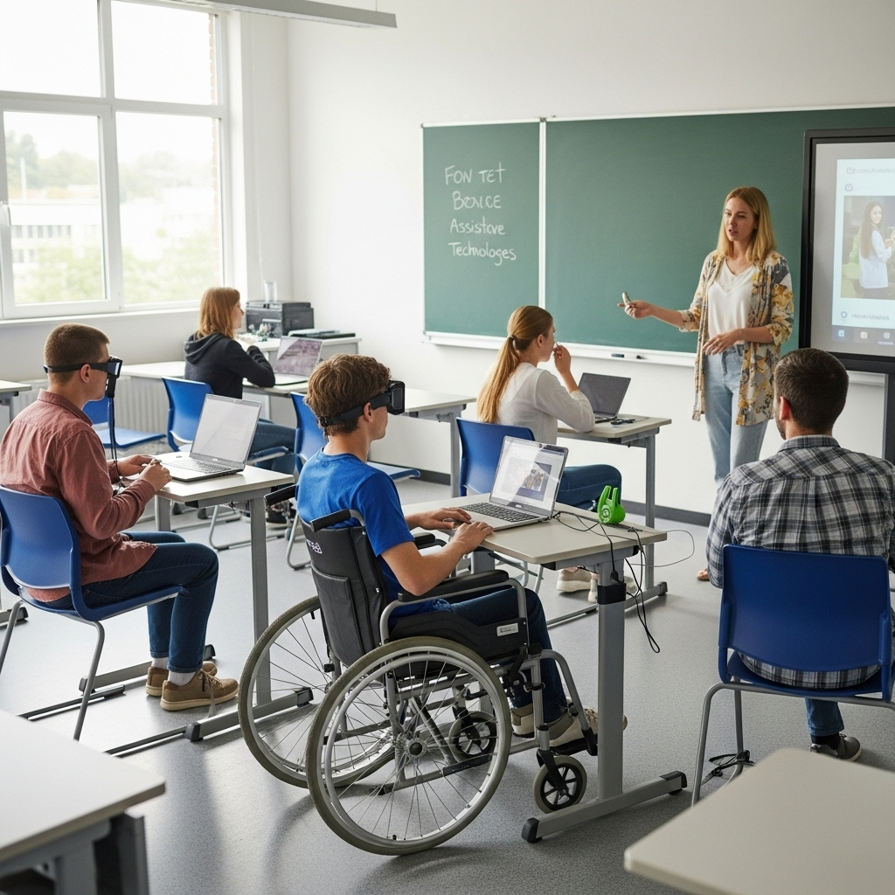
إعداد: عبدالرحمن
الوحدة 1
تصنيف التقنيات حسب نوع الإعاقة
- الإعاقة البصرية: قارئات الشاشة، أجهزة برايل، تطبيقات التنقّل
- الإعاقة السمعية: أجهزة السمع، محولات الكلام إلى نص
- الإعاقة الحركية: كراسي ذكية، أنظمة التحكم البديلة
- الإعاقات المعرفية والتواصلية: تطبيقات AAC، برامج تنظيم المهام
- يُراعى في التصميم الفروق الفردية داخل كل فئة
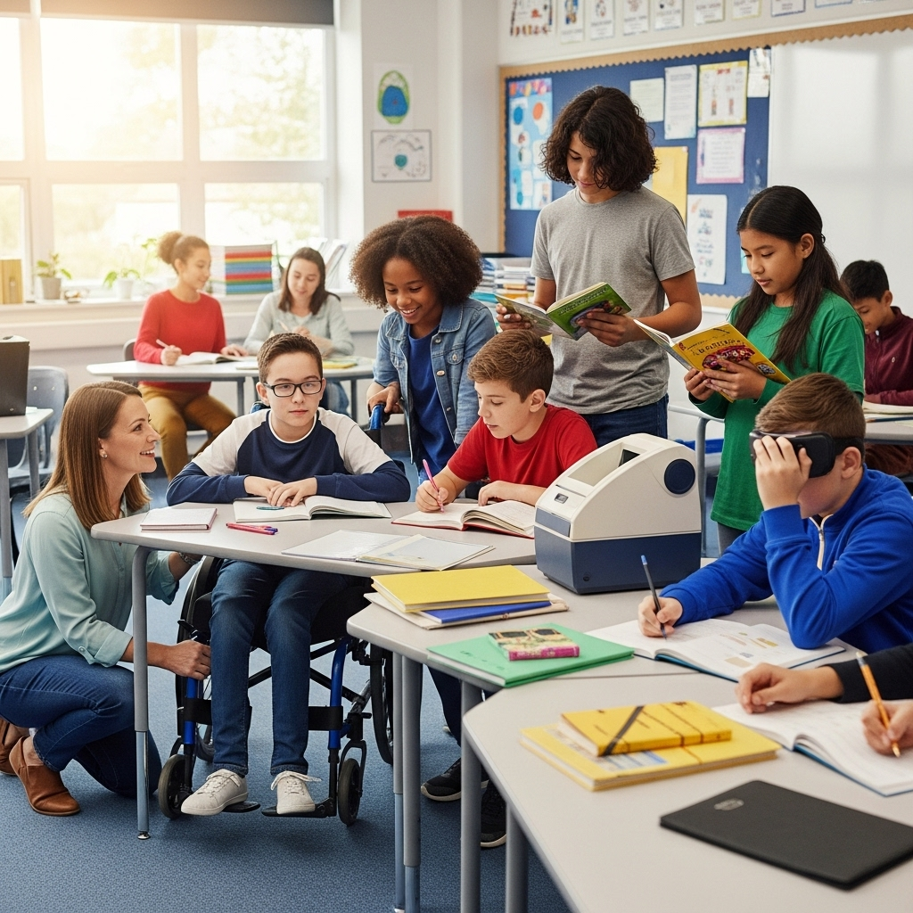
إعداد: عبدالرحمن
الوحدة 1
أمثلة أولية على التقنيات المساعدة
- العصا البيضاء للمكفوفين
- أجهزة السمع الرقمية للصم
- لوحات الحروف للتواصل غير اللفظي
- برامج تكبير الشاشة لضعاف البصر
- أدوات الكتابة ذات القبضات المُعدَّلة لذوي صعوبات الحركة
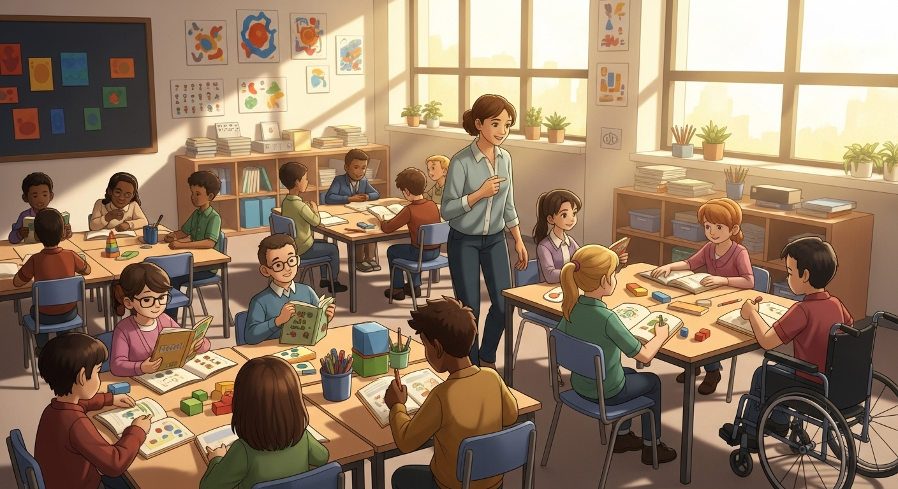
إعداد: عبدالرحمن
الوحدة 1
التطور التاريخي للتقنيات المساعدة
- بدأت بأدوات يدوية بسيطة (مثل العجلات الخشبية)
- تطوّرت مع الثورة الصناعية (أجهزة سمع ميكانيكية)
- شهدت قفزة نوعية مع ظهور الحاسوب والإنترنت
- اليوم: تُدمج مع الذكاء الاصطناعي، وإنترنت الأشياء
- المستقبل يتجه نحو الحلول الذكية القابلة للتخصيص الفردي

إعداد: عبدالرحمن
الوحدة 2
قارئات الشاشة (Screen Readers)
- برامج تحول النصوص الرقمية إلى كلام منطوق
- أشهرها: JAWS، NVDA، VoiceOver (في أجهزة آبل)
- تدعم التنقّل عبر لوحة المفاتيح دون الحاجة للرؤية
- تُستخدم في تصفح الإنترنت، قراءة البريد، وكتابة المستندات
- ضرورية لدمج المكفوفين في التعليم العالي والعمل المكتبي
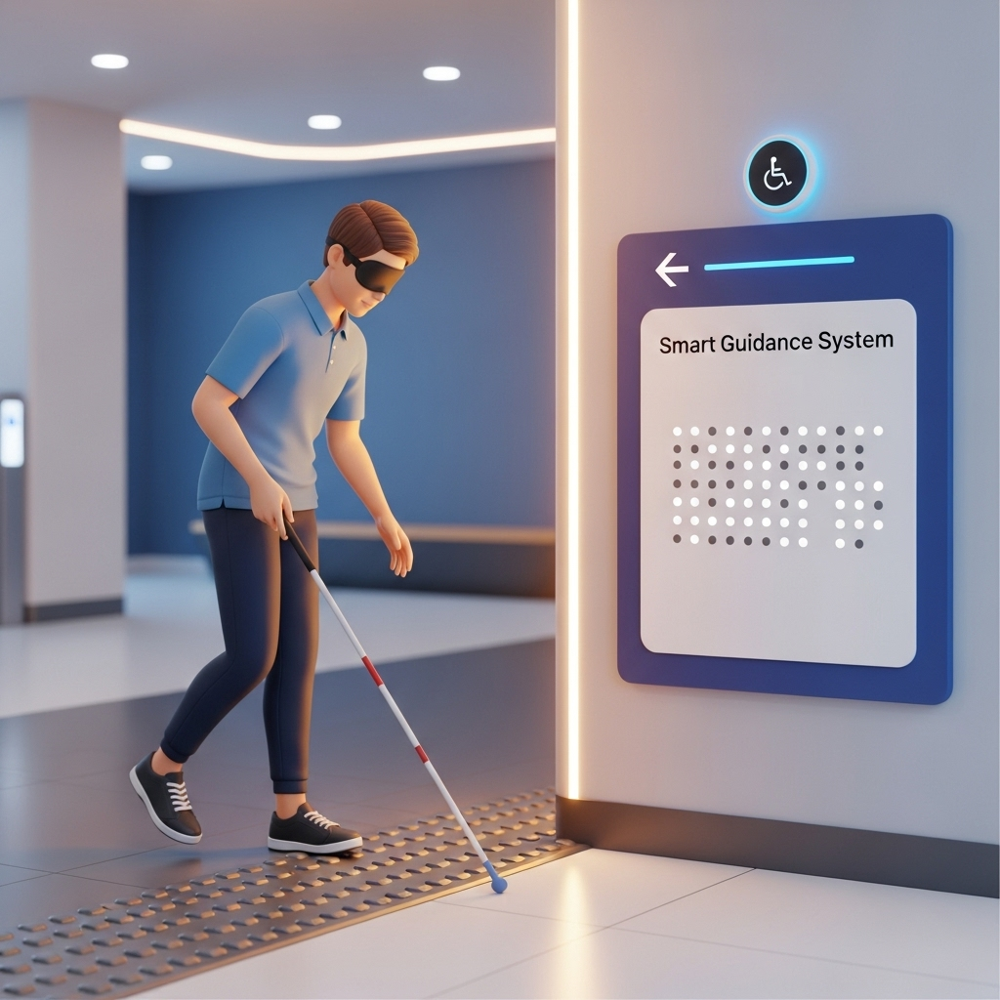
إعداد: عمر
الوحدة 2
لغة برايل الرقمية والأجهزة المرتبطة بها
- أجهزة طباعة برايل إلكترونية تحوّل النصوص إلى نقاط ملموسة
- لوحات برايل قابلة للتحديث (Refreshable Braille Displays)
- تُستخدم في الامتحانات، الكتب، واللافتات العامة
- تدعم التعلّم المبكر للقراءة والكتابة لدى الأطفال المكفوفين
- تتكامل مع الحواسيب والهواتف الذكية عبر منافذ USB أو البلوتوث
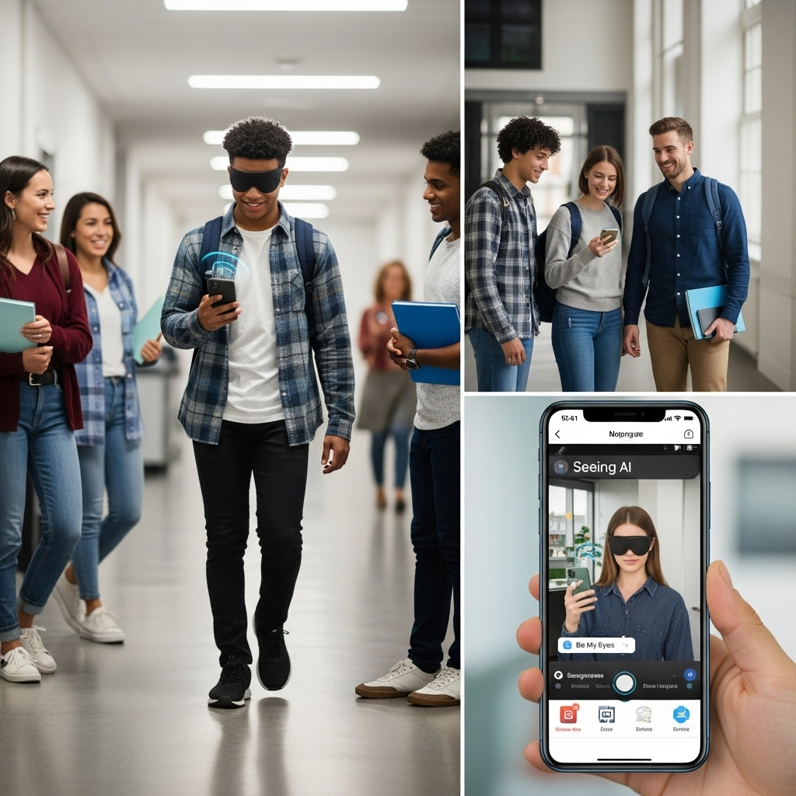
إعداد: عمر
الوحدة 2
التطبيقات الذكية للتنقّل والوصف البصري
- تطبيق "Seeing AI" (من مايكروسوفت) يصف الأشخاص، النصوص، والعملات
- تطبيق "Be My Eyes" يربط المكفوف بمتطوع مبصر عبر مكالمة فيديو
- تستخدم الذكاء الاصطناعي لفهم البيئة المحيطة
- تساعد في التسوق، قراءة القوائم، والتعرّف على الوجوه
- تعمل دون اتصال دائم بالإنترنت في بعض الوظائف الأساسية
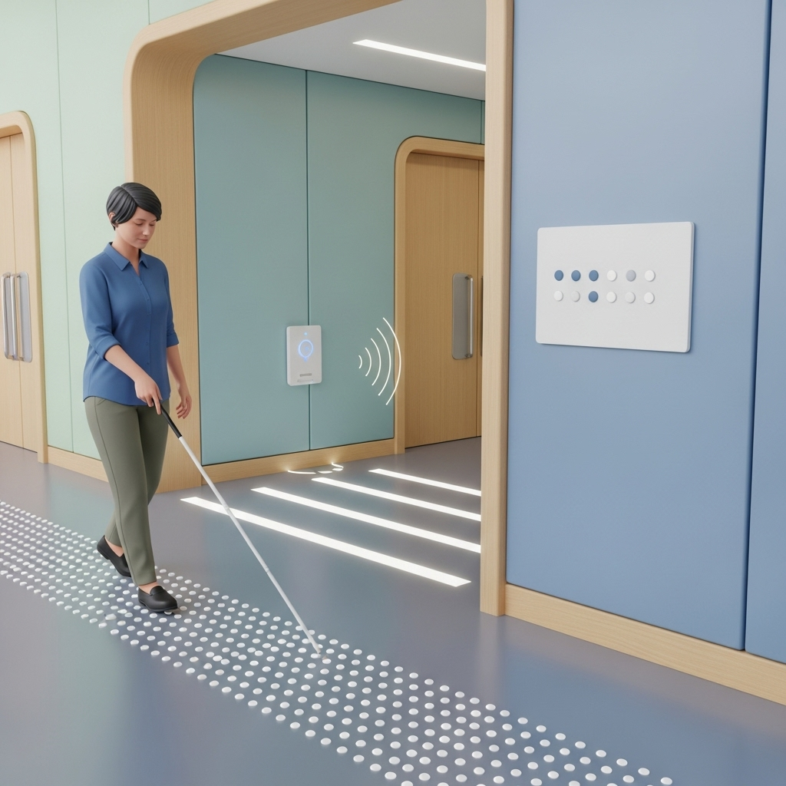
إعداد: عمر
الوحدة 2
النظارات والمستشعرات الذكية
- نظارات مزوّدة بكاميرات ومستشعرات للكشف عن العوائق
- تُصدر تنبيهات صوتية أو اهتزازية عند الاقتراب من خطر
- بعضها يميّز الإشارات المرورية أو لافتات المباني
- تُحسّن الأمان والثقة أثناء التنقّل المستقل
- لا تُعيد البصر، لكنها تعوّض جزئيًّا عن غيابه

إعداد: عمر
الوحدة 2
مبادئ التصميم الصديق للمكفوفين
- استخدام التباين العالي بين الخلفية والنص
- تجنّب الاعتماد على اللون وحده لنقل المعلومات
- توفير وصف نصي بديل (Alt Text) للصور
- ضمان توافق المواقع مع قارئات الشاشة
- اعتماد معايير الوصولية العالمية (مثل WCAG)
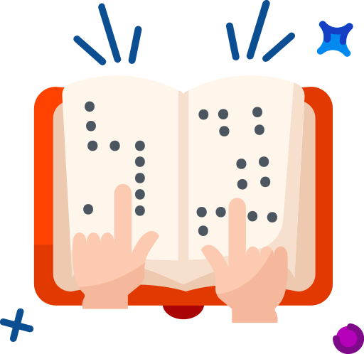
إعداد: عمر
الوحدة 3
أجهزة السمع الرقمية والسماعات الذكية
- تُحسّن جودة الصوت وتقلل الضوضاء الخلفية
- تتصل بالهواتف، التلفاز، والحواسيب عبر البلوتوث
- بعضها يُبرمج حسب بيئة الاستخدام (فصل دراسي، مطعم)
- تدعم التعلّم السمعي واللغوي لدى الأطفال
- تُعدّ جزءًا من خطة الدعم الفردي (IEP) في المدارس
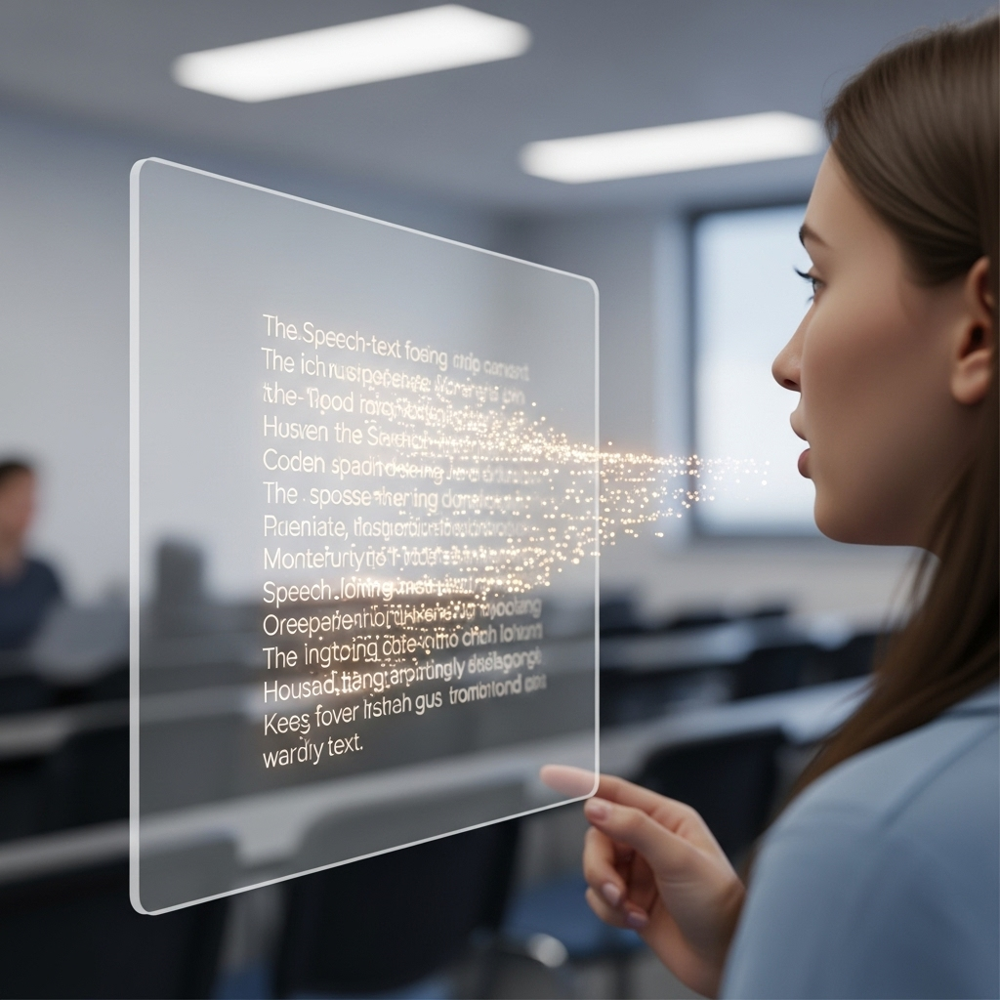
إعداد: فاطمة
الوحدة 3
تطبيقات تحويل الكلام إلى نص (Speech-to-Text)
- مثل Google Live Transcribe وOtter.ai
- تحوّل الكلام إلى نص في الوقت الفعلي بدقة عالية
- تُستخدم في المحاضرات، الاجتماعات، والمكالمات الهاتفية
- تدعم لغات متعددة، بما فيها العربية
- تساعد في متابعة الحوار دون الحاجة لمترجم
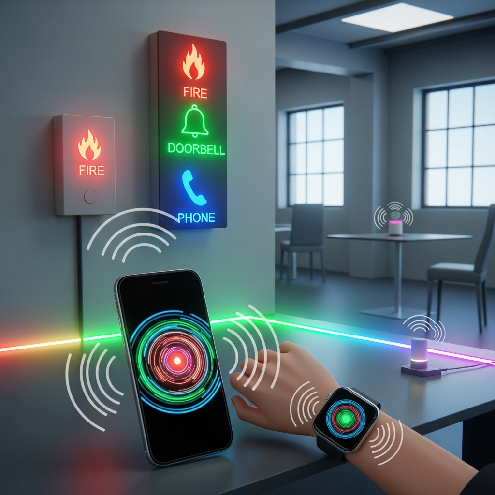
إعداد: فاطمة
الوحدة 3
أنظمة التنبيه البصري والاهتزازي
- أجراس الباب تُضيء عند الرنين
- إنذارات الحريق تُصدر وميضًا قويًّا
- المنبهات تهتز تحت الوسادة أو تُضيء الغرفة
- تُستخدم في المنازل، المدارس، والفنادق
- تُقلل الاعتماد على السمع في المواقف الحرجة
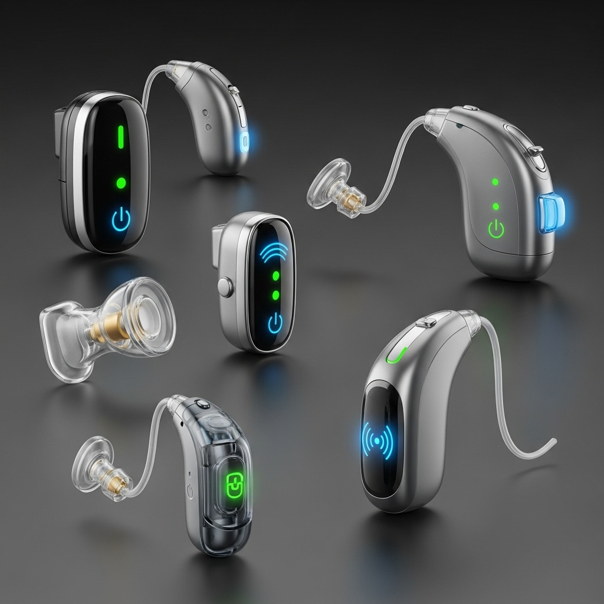
إعداد: فاطمة
الوحدة 3
لغة الإشارة الرقمية والروبوتات المفسّرة
- شاشات ذكية تعرض مترجمي لغة إشارة افتراضيين
- روبوتات تتفاعل بلغة الإشارة مع الأطفال في المدارس
- تُستخدم في المطارات، المستشفيات، والمصارف
- تُقلل حاجز التواصل مع غير المُلمين بلغة الإشارة
- لا تحل محل المترجم البشري، لكنها تُكمّله
إعداد: فاطمة
الوحدة 3
الفصول الدراسية الدامجة للصم
- استخدام أنظمة FM: ميكروفون المعلم ينقل الصوت مباشرة لسماعات الطالب
- توفير مترجم لغة إشارة في المحاضرات المهمة
- عرض النصوص على الشاشة أثناء الشرح
- تدريب المعلمين على التواصل البصري والتعبير الجسدي
- تصميم الأنشطة لتكون بصرية وتفاعلية أكثر
إعداد: فاطمة
الوحدة 4
الكراسي الكهربائية الذكية
- تُوجَّه باليد، الصوت، العين، أو حتى التنفس
- مزوّدة بمستشعرات لتجنب الاصطدام
- بعضها يصعد السلالم أو يتكيف مع التضاريس الوعرة
- تُحسّن التنقّل والاستقلالية خارج المنزل
- تُربط بالهاتف لمراقبة الحالة الصحية
إعداد: علي
الوحدة 4
أنظمة تتبع حركة العين (Eye-tracking)
- تسمح بالتحكم في الحاسوب عبر النظر إلى أجزاء الشاشة
- تُستخدم في التواصل، التصفح، واللعب
- مفيدة لمن يعانون من شلل رباعي أو ضمور العضلات
- تدعم الكتابة عبر اختيار الحروف بنظرة العين
- تتطلب معايرة أولية، لكنها دقيقة جدًّا بعد التدريب
إعداد: علي
الوحدة 4
الأطراف الصناعية والروبوتات المساعدة
- أطراف ذكية تستجيب لإشارات العضلات أو الدماغ
- تُقلّد الحركات الطبيعية (الإمساك، الإشارة، المشي)
- بعضها يُزوّد بحساسات لمس لتحسين التفاعل
- تُستخدم في الحياة اليومية والمهن الدقيقة
- تكلفة مرتفعة، لكنها في تراجع تدريجي
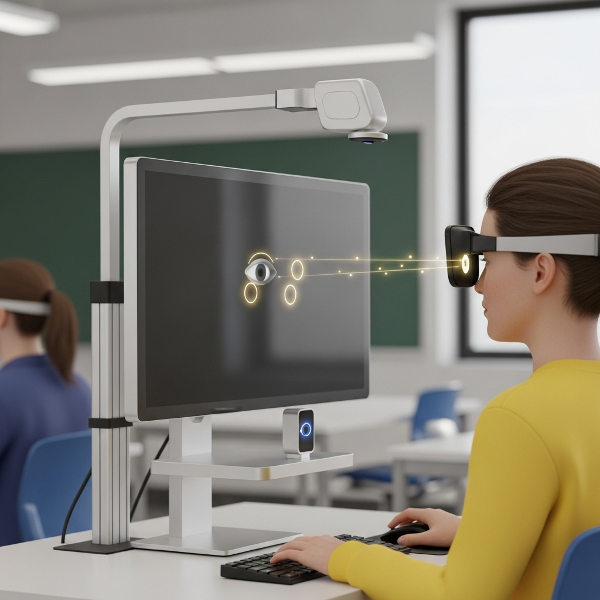
إعداد: علي
الوحدة 4
واجهات التحكم البديلة
- مفاتيح ضغط كبيرة لمن يعانون من ضعف الدقة الحركية
- أنابيب تنفس (Sip-and-Puff) للتحكم في الكرسي أو الحاسوب
- أجهزة تُفعّل بالرأس أو الكتف
- تُوصَل بالأجهزة عبر منافذ USB أو لاسلكي
- تُصمّم حسب قدرات المستخدم الفردية
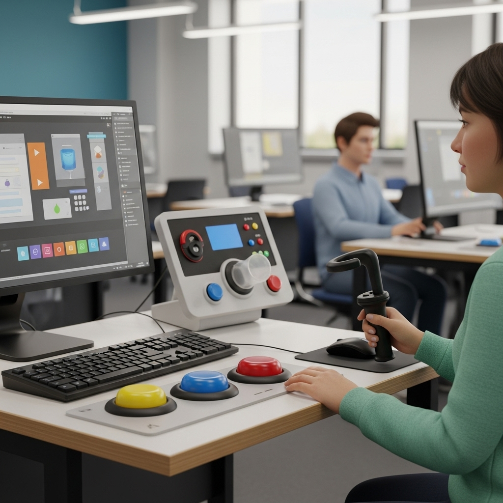
إعداد: علي
الوحدة 4
المنزل الذكي كبيئة داعمة
- التحكم الصوتي بالإضاءة، الستائر، والأجهزة الكهربائية
- أنظمة أمان تُفعّل الإنذارات تلقائيًّا عند السقوط
- أبواب منزلقة كهربائية بدون حاجة للدفع
- تقليل الحاجة للمساعدة البشرية اليومية
- يعزز الكرامة، الخصوصية، والاستقلال
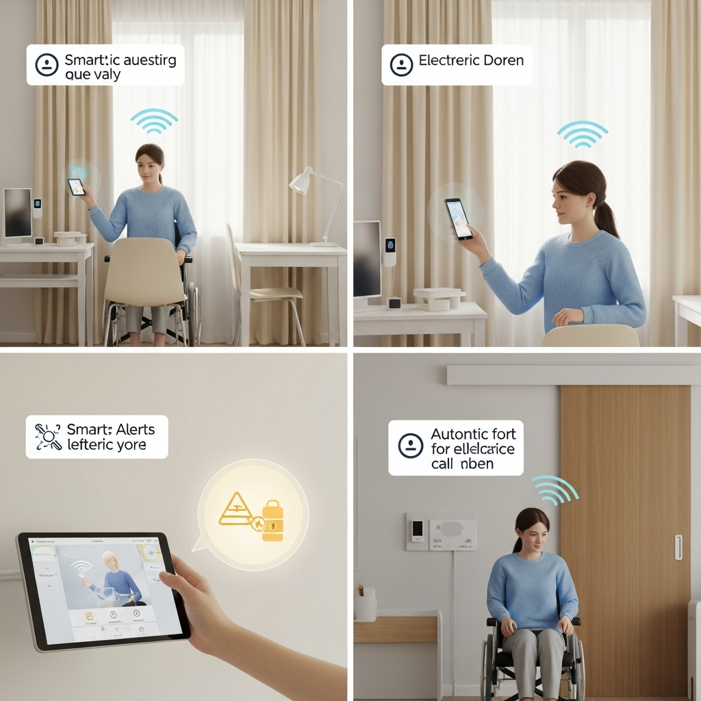
إعداد: علي
الوحدة 5
البرمجيات التعليمية التكيفية
- مثل Kurzweil 3000 وRead&Write
- تُبسّط النصوص، تُلوّن المقاطع، وتُسمّع الكلمات
- تدعم القراءة والكتابة لمن يعانون من عسر القراءة (Dyslexia)
- تُستخدم في الفصول الدراسية والمنزل
- تُقلل الإحباط وتعزز الثقة بالنفس
إعداد: كارين
الوحدة 5
أدوات إدارة الوقت والتركيز
- تطبيقات تعتمد على تقنية "بومودورو" (Pomodoro)
- مؤقتات مرئية (Time Timer) تُظهر مرور الوقت بلون متحرك
- تذكيرات صوتية واهتزازية للمهام اليومية
- تُستخدم لدعم الطلاب ذوي اضطراب فرط الحركة (ADHD)
- تُحسّن التنظيم الذاتي وتحقيق الأهداف
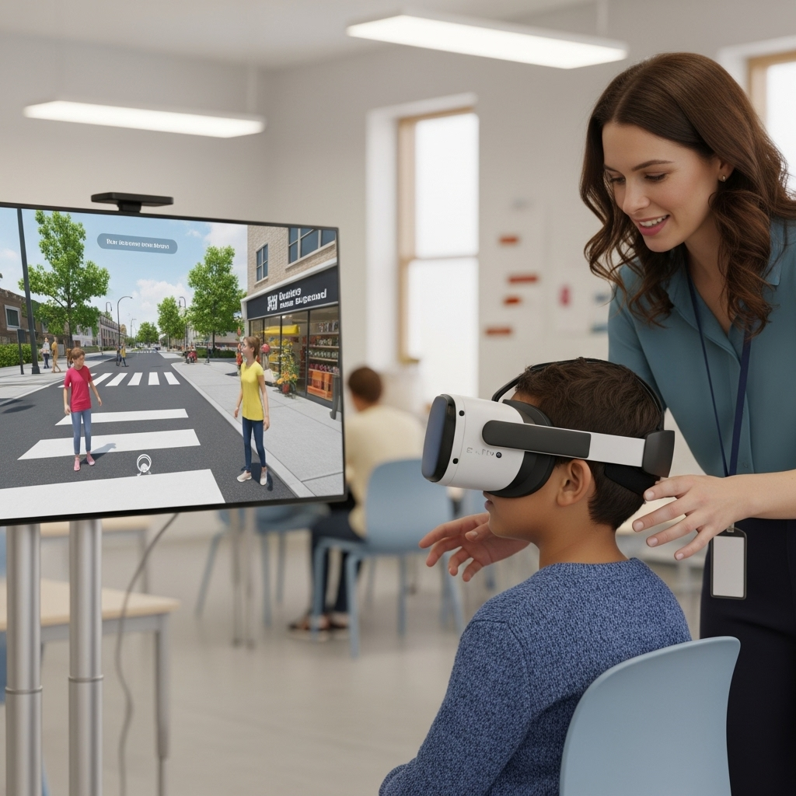
إعداد: كارين
الوحدة 5
الواقع الافتراضي (VR) في العلاج
- بيئات محاكاة آمنة لتعليم المهارات الاجتماعية
- تُستخدم مع الأطفال ذوي التوحد لتمرينهم على المواقف الواقعية
- مثل عبور الشارع، شراء سلعة، أو بدء محادثة
- تقلل القلق الناتج عن المواقف الجديدة
- تُطبّق تحت إشراف أخصائي تربوي أو نفسي
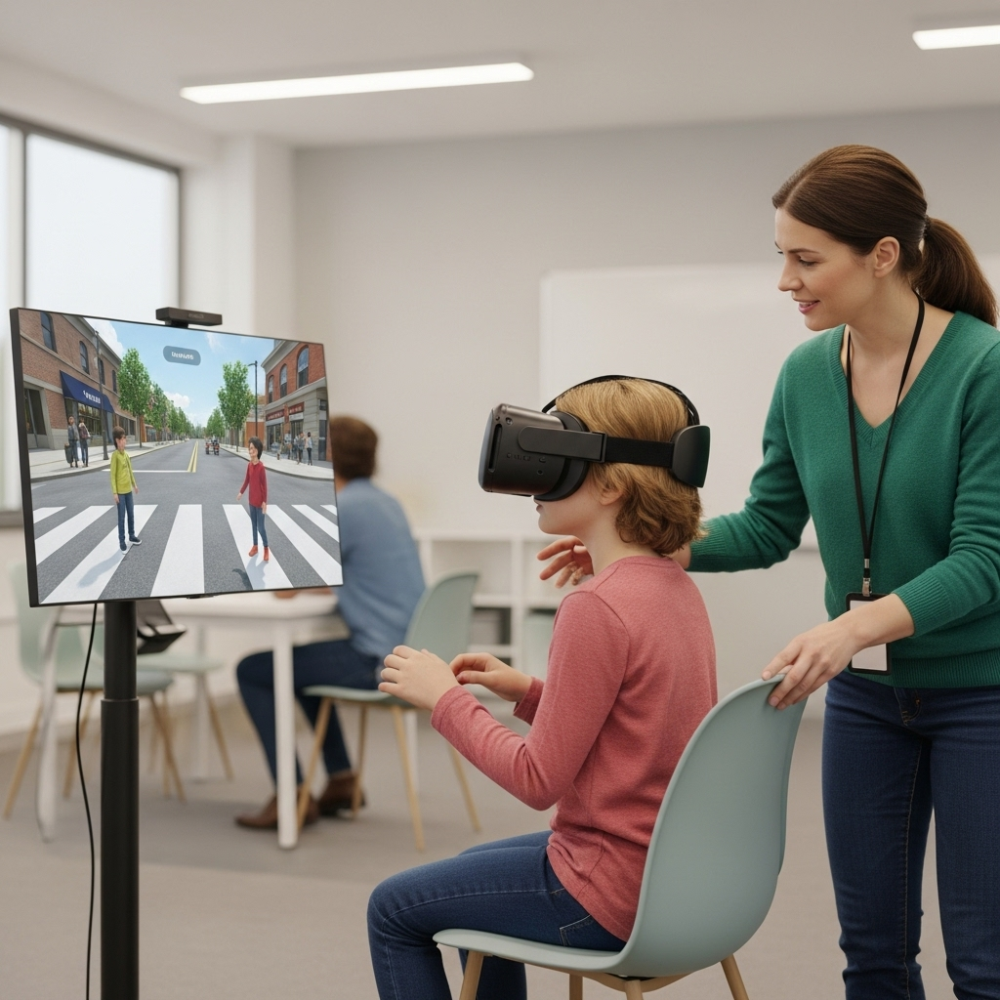
إعداد: كارين
الوحدة 5
الذكاء الاصطناعي في التخصيص التعليمي
- أنظمة تحلّل أداء الطالب وتُعدّل مستوى الصعوبة تلقائيًّا
- تُقدّم تمارين إضافية في المجالات الضعيفة
- تُقلل الفجوة بين الطالب ومناهج التعليم الموحّدة
- تُحفّز التعلّم الذاتي عبر التغذية الراجعة الفورية
- تُستخدم في منصات مثل Khan Academy وDuolingo
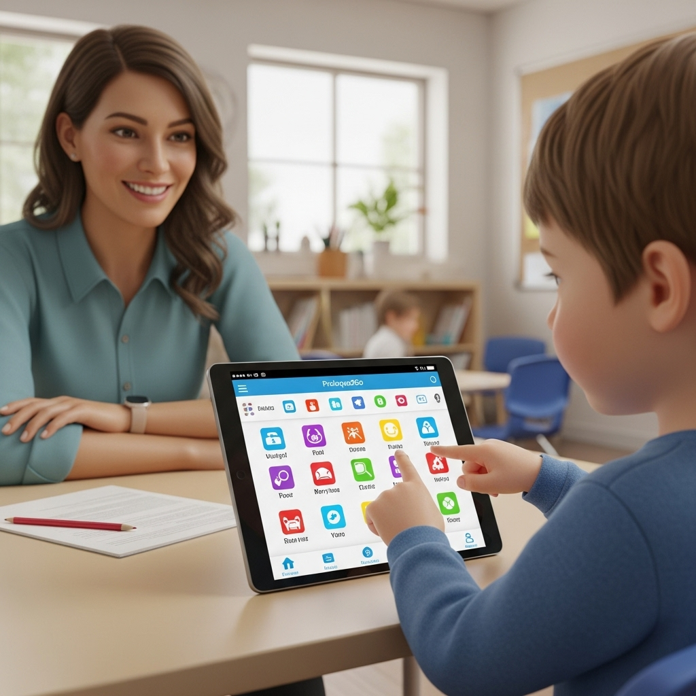
إعداد: كارين
الوحدة 5
تطبيقات التواصل البديل (مثل Proloquo2Go)
- تُستخدم مع الأطفال غير الناطقين أو ذوي التوحد
- تعتمد على رموز، صور، وعبارات جاهزة
- تُمكن الطفل من التعبير عن الجوع، الألم، أو الرغبات
- تُقلل نوبات الغضب الناتجة عن عجز التواصل
- تُعدّ جسرًا نحو تطوير اللغة اللفظية لاحقًا
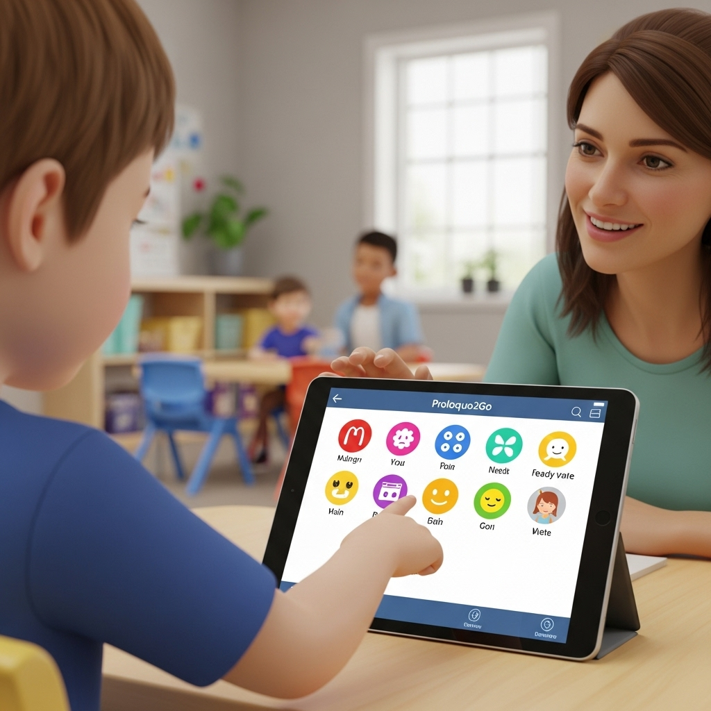
إعداد: كارين
الوحدة 6
مفهوم أنظمة AAC
- وسائل غير لفظية للتعبير عن الأفكار والاحتياجات
- تنقسم إلى: غير إلكترونية (لوحات ورقية) وإلكترونية (أجهزة ذكية)
- تُستخدم مع من يعانون من شلل دماغي، توحد، أو إصابات دماغية
- لا تُعوّض عن الكلام، بل تُكمّله أو تُسهّل تطويره
- جزء أساسي من خطط الدعم الفردي (IEP)
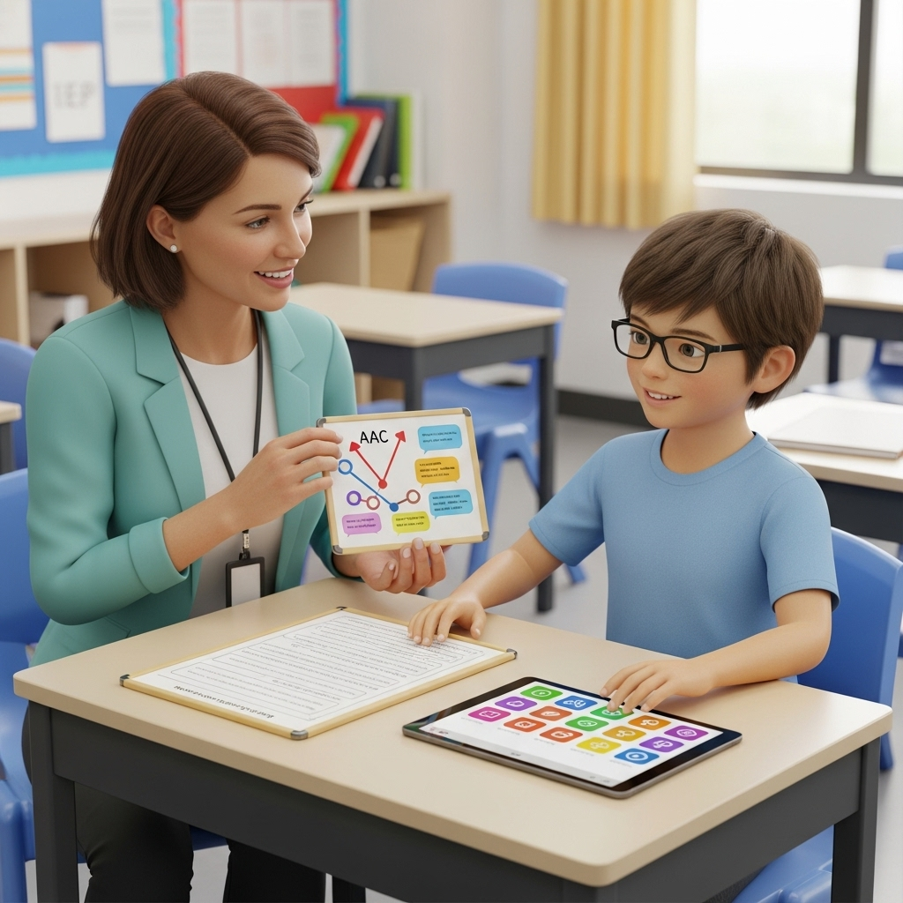
إعداد: فيروز
الوحدة 6
لوحات التواصل البصرية
- تحتوي على صور، رموز، أو كلمات مطبوعة
- تُستخدم بالإشارة بالإصبع أو النظر
- شائعة في المدارس الخاصة والمنازل
- منخفضة التكلفة وسهلة التخصيص
- تُعدّ مدخلًا مثاليًّا لأنظمة AAC الإلكترونية
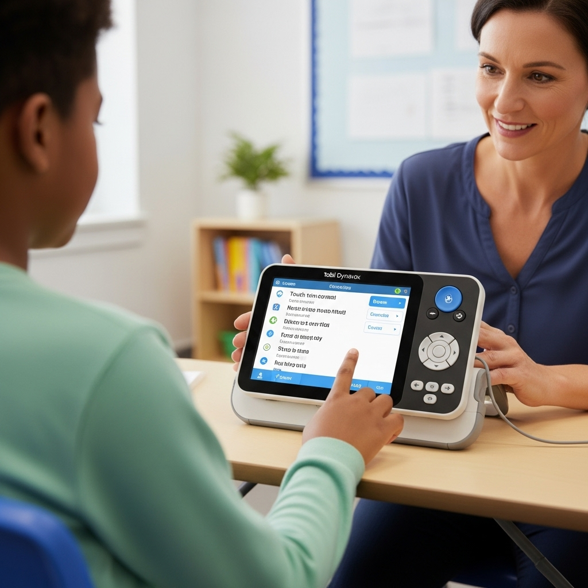
إعداد: فيروز
الوحدة 6
أجهزة توليد الكلام (Speech-Generating Devices)
- مثل Tobii Dynavox وAccent 1000
- تحوّل اللمس أو حركة العين إلى كلام منطوق
- تحتوي على آلاف العبارات والكلمات القابلة للتخصيص
- تُستخدم في المدرسة، العيادة، والمنزل
- تُحسّن جودة الحياة وتعزز الهوية الشخصية
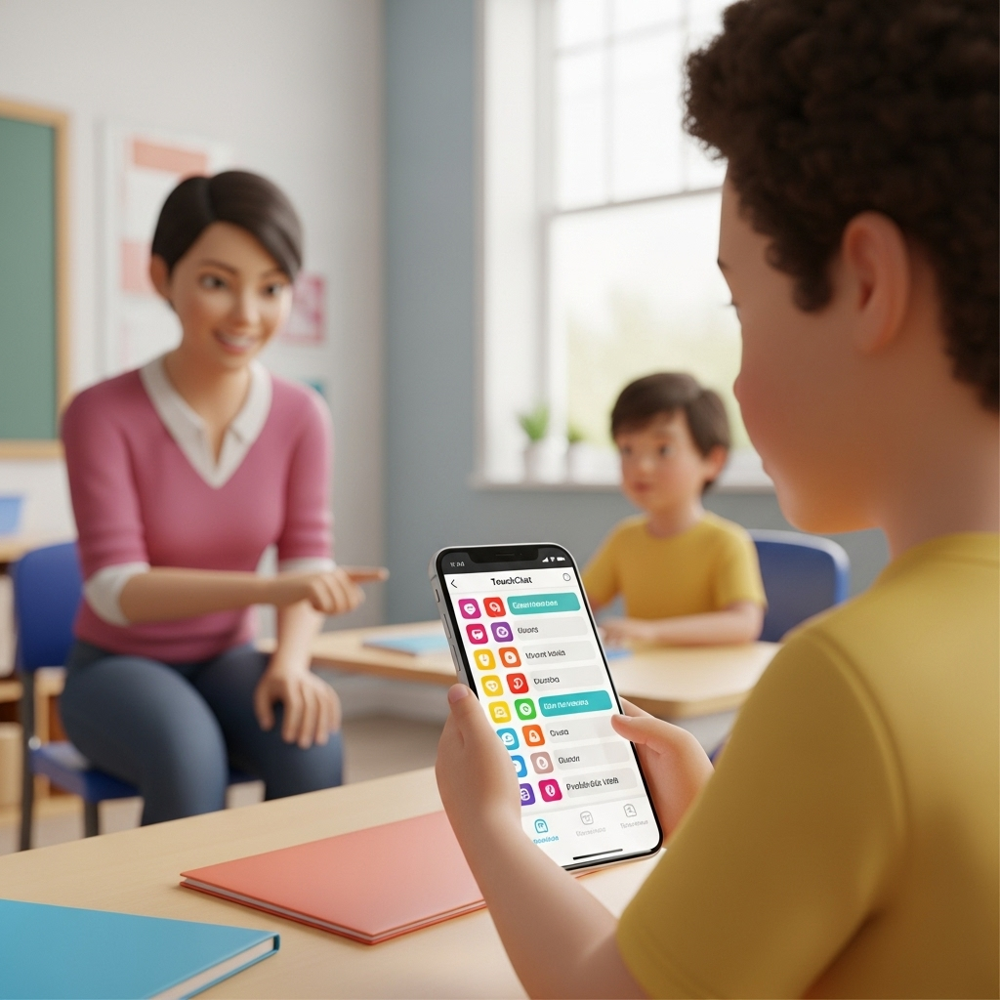
إعداد: فيروز
الوحدة 6
تطبيقات الهواتف الذكية الداعمة
- مثل TouchChat، LAMP Words for Life، وPredictable
- تحوّل الهاتف إلى جهاز AAC منخفض التكلفة
- تدعم التخصيص حسب عمر المستخدم واهتماماته
- تُحدّث باستمرار بإضافة كلمات وصور جديدة
- تُسهّل المشاركة في الأنشطة الاجتماعية
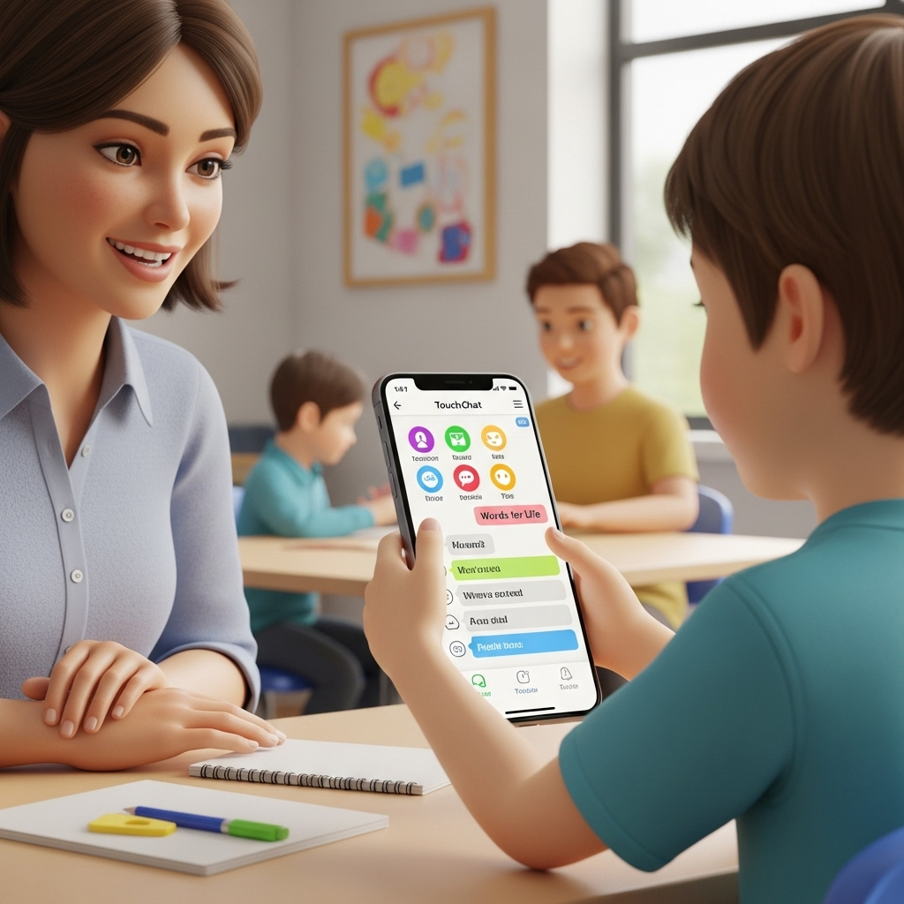
إعداد: فيروز
الوحدة 6
دور AAC في الدمج التعليمي والاجتماعي
- يُقلّل العزلة ويعزز التفاعل مع الأقران
- يمكّن من المشاركة في المناقشات الصفية
- يُحسّن الصورة الذاتية ويقلل الإحباط
- يُسهّل التقييم التربوي عبر التعبير عن الفهم
- يُعدّ جسرًا نحو الاندماج في المجتمع الأوسع
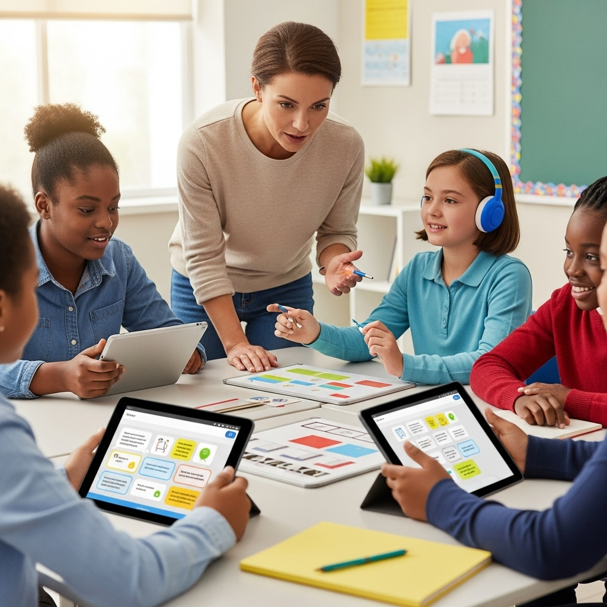
إعداد: فيروز
الوحدة 7
الفصول الدراسية الشاملة (Inclusive Classrooms)
- تدمج الطلاب ذوي الاحتياجات الخاصة مع أقرانهم
- تُوفّر أدوات دعم فردية دون عزل
- تعتمد على مبدأ "التعليم للجميع"
- يتطلب تدريب المعلمين على استراتيجيات الدمج
- تُعزّز التفاهم والتسامح بين الطلاب
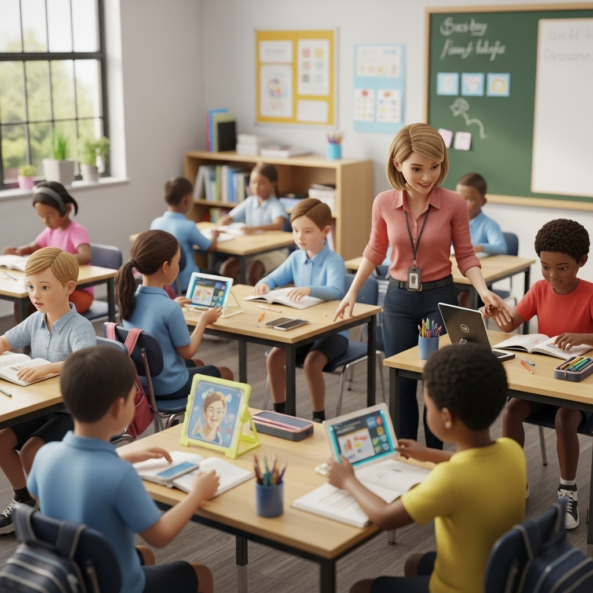
إعداد: أروى
الوحدة 7
أدوات التقييم التكيفي
- اختبارات رقمية تُعدّل مستوى الصعوبة تلقائيًّا
- تُقدّم بصيغ بديلة: صوت، فيديو، تفاعل
- تسمح بوقت إضافي أو إجابات شفهية
- تُقيّم الفهم لا القدرة على الكتابة أو القراءة فقط
- تُقلل القلق وتعكس الأداء الحقيقي
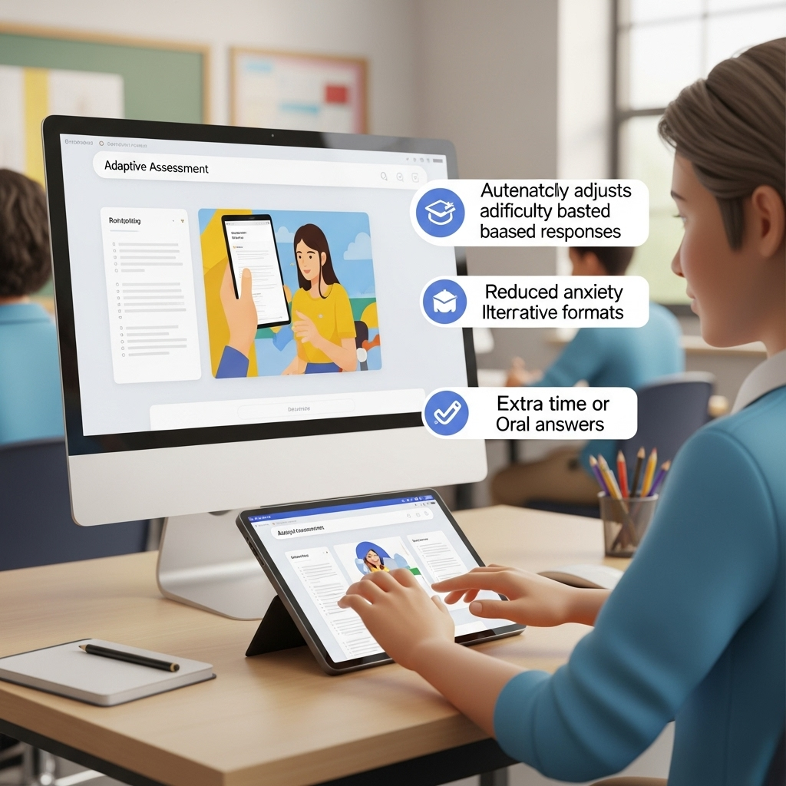
إعداد: أروى
الوحدة 7
البرمجيات التعليمية المُعدَّلة
- برامج رياضيات تستخدم كتل افتراضية لشرح المفاهيم
- تطبيقات علوم تُبسّط التجارب عبر المحاكاة
- أدوات لغوية تُصحح الأخطاء الإملائية تلقائيًّا
- تُستخدم على الحاسوب أو اللوحة الذكية
- تُحفّز التعلّم النشط والتجريبي
إعداد: أروى
الوحدة 7
أدوات الكتابة والقراءة المساعدة
- أقلام رقمية تحوّل الكتابة اليدوية إلى نص
- برامج تبطئ سرعة القراءة لتحسين الفهم
- أدوات تنبؤ بالكلمات لمن يعانون من عسر الكتابة
- تُستخدم في الامتحانات والواجبات المنزلية
- تُقلل العبء المعرفي وتركّز على المحتوى
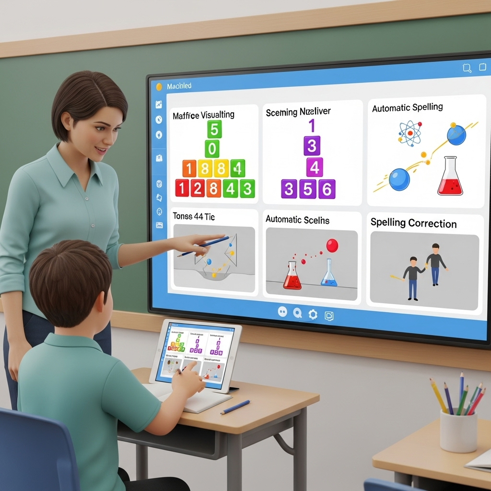
إعداد: أروى
الوحدة 7
تجارب عالمية ناجحة
- فنلندا: دمج كامل للتقنيات المساعدة في المناهج
- سنغافورة: مراكز موارد تربوية مجهزة لكل مدرسة
- كندا: دعم حكومي مجاني للأجهزة الأساسية
- الإمارات: مبادرات وطنية للدمج الرقمي
- تُظهر أن الاستثمار في الدمج يُحقّق عوائد اجتماعية واقتصادية
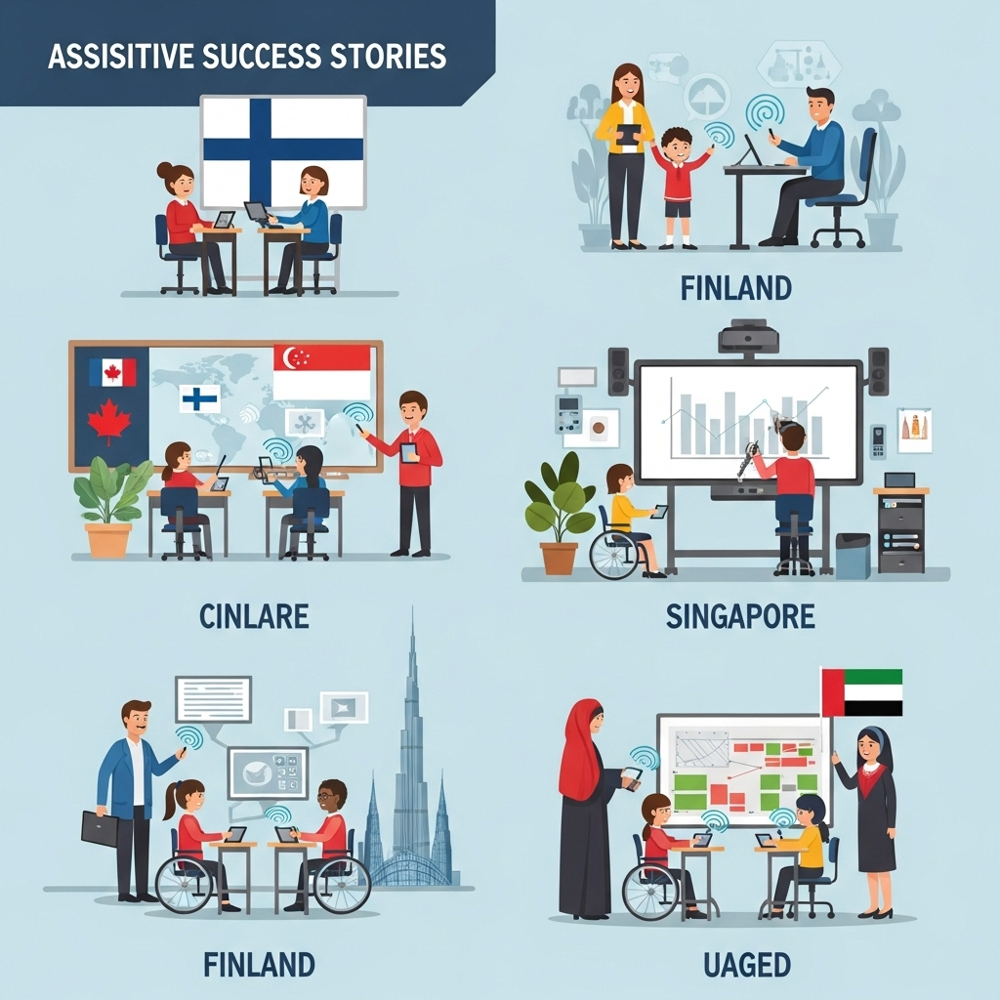
إعداد: أروى
الوحدة 8
تكييف بيئة العمل
- تعديل ارتفاع المكاتب والكراسي
- استخدام لوحات مفاتيح خاصة أو شاشات كبيرة
- توفير برامج قراءة الشاشة أو تكبير النص
- تصميم مسارات آمنة للتنقّل داخل المبنى
- يُطبّق وفق مبدأ "التصميم الشامل"
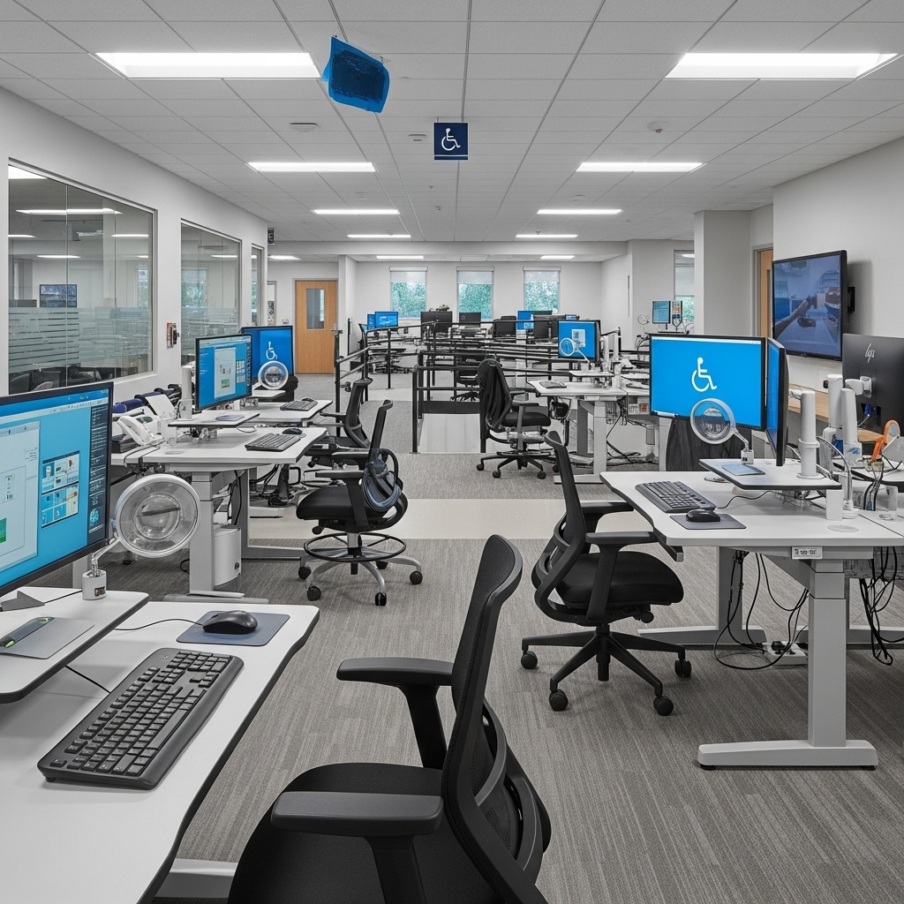
إعداد: ڤيولا
الوحدة 8
أدوات إدارة المهام للمعاقين معرفيًّا
- تقويمات مرئية تعرض المهام اليومية
- تذكيرات صوتية عبر المساعدات الذكية
- خرائط ذهنية رقمية لتنظيم الأفكار
- تطبيقات تُقسّم المشاريع إلى خطوات بسيطة
- تُقلل التوتر وتحسّن الإنتاجية
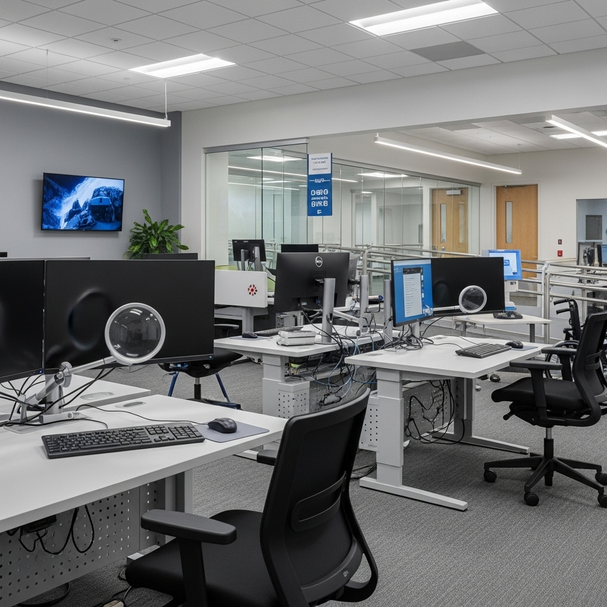
إعداد: ڤيولا
الوحدة 8
العمل عن بُعد كفرصة دامجة
- يُقلل الحواجز المادية (المواصلات، المباني غير المجهزة)
- يسمح باستخدام الأدوات الشخصية المألوفة
- يُوفّر مرونة في أوقات العمل
- يُسهّل التوازن بين العمل والاحتياجات الصحية
- يُعدّ نموذجًا ناجحًا لتوظيف ذوي الإعاقات الحركية والمعرفية
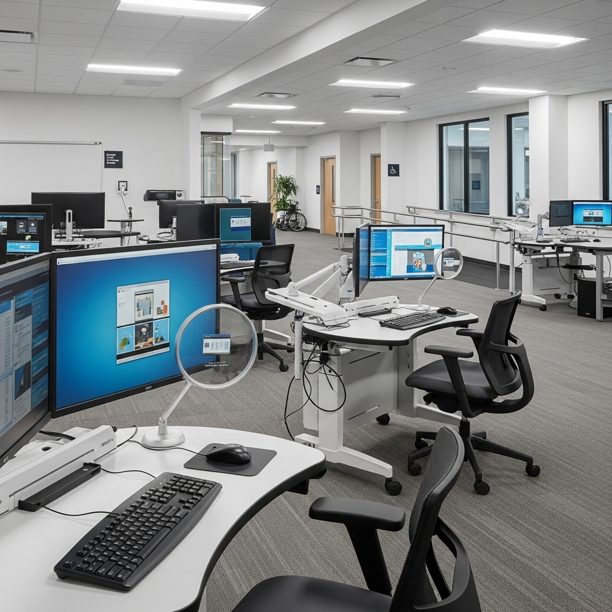
إعداد: ڤيولا
الوحدة 8
دراسات حالة واقعية
- مايكروسوفت: برنامج توظيف خاص للأشخاص ذوي التوحد
- SAP: فرق عمل متنوعة تضم موظفين من ذوي الإعاقات
- IBM: أدوات دعم رقمية مدمجة في بيئة العمل
- شركات عربية: مبادرات ناشئة في السعودية والإمارات
- تُثبت أن التنوّع يُحسّن الابتكار والأداء
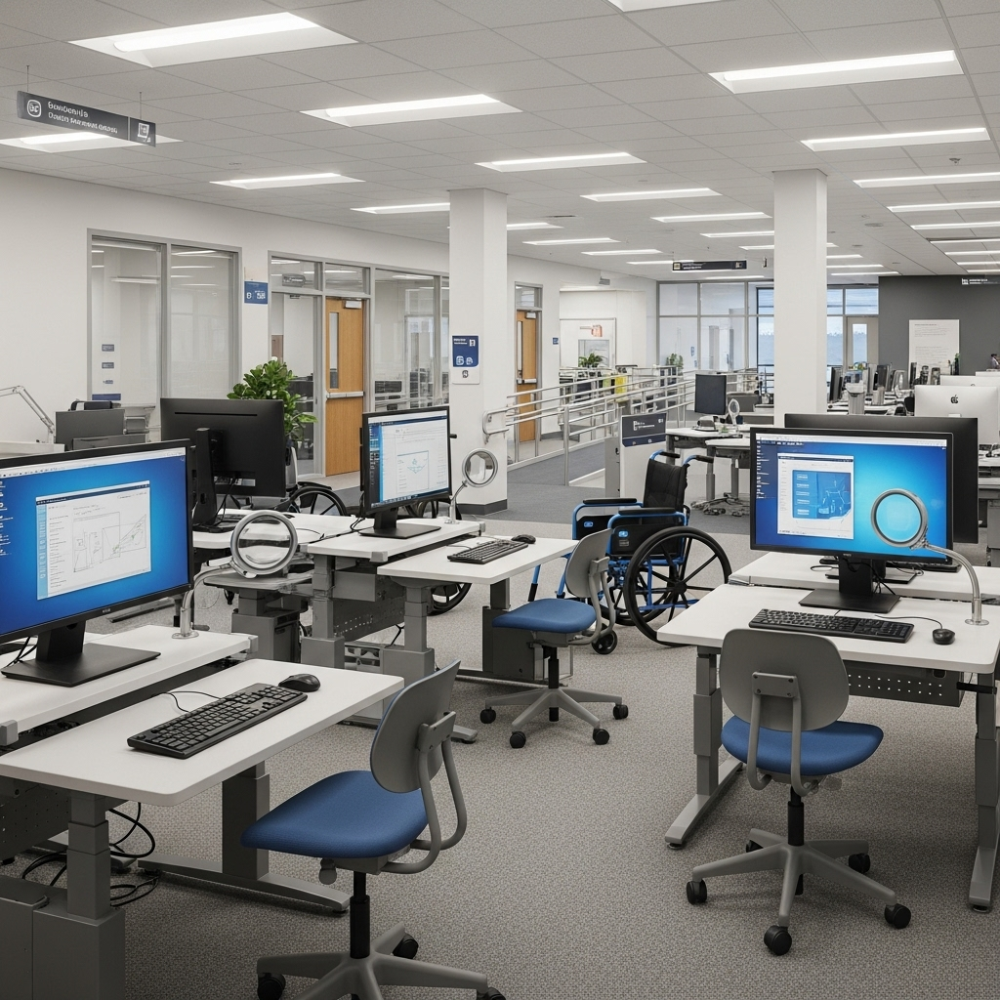
إعداد: ڤيولا
الوحدة 8
دور الشركات في الابتكار الاجتماعي
- Apple: ميزات "الوصولية" مدمجة في كل جهاز
- Google: أدوات مجانية مثل Live Transcribe وLookout
- تطوير منتجات تخدم الجميع، وليس فئة محدودة
- دعم مبادرات تدريب وتأهيل محليّة
- المسؤولية الاجتماعية تُترجم إلى حلول تكنولوجية فعلية
إعداد: ڤيولا
الوحدة 9
الذكاء الاصطناعي لتحسين جودة الحياة
- أنظمة تتعلم روتين المستخدم وتُقدّم توصيات شخصية
- تذكير تلقائي بمواعيد الأدوية أو الجلسات العلاجية
- مساعدات صوتية مخصصة لذوي صعوبات التعلم
- تحليل سلوكي للكشف المبكر عن التغيرات الصحية
- يُقلل الاعتماد على المراقبة البشرية المستمرة
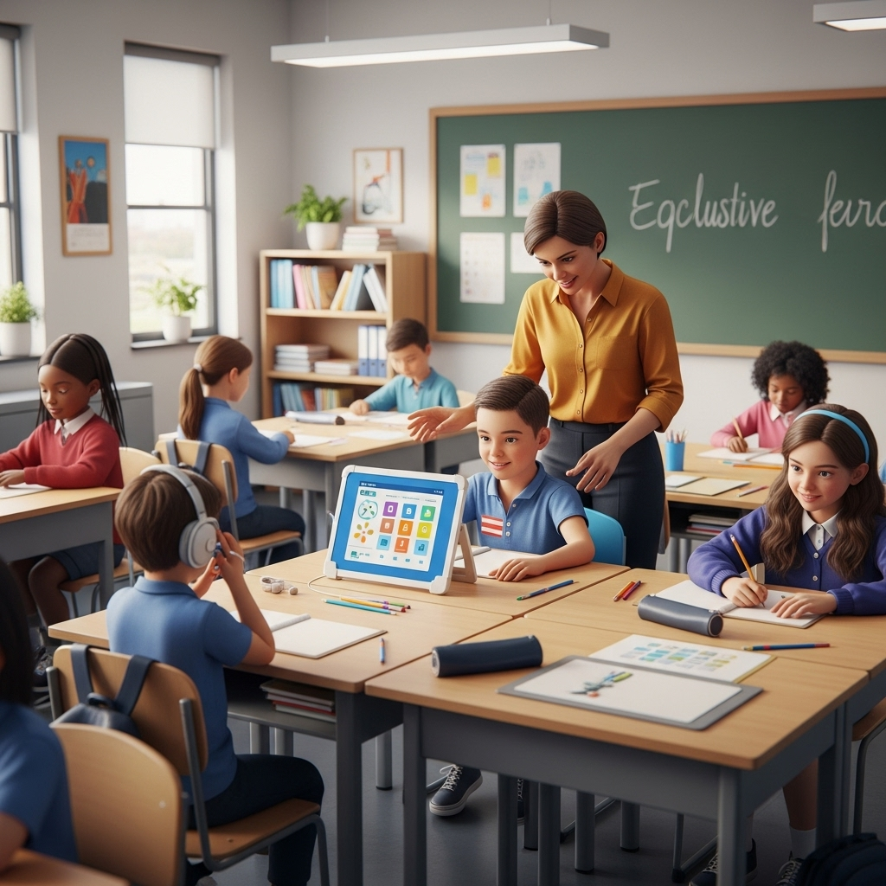
إعداد: ماريا
الوحدة 9
الروبوتات الاجتماعية للتوحد
- روبوتات مثل "NAO" و"QTrobot" تُستخدم في العلاج
- تُعلّم التفاعل العاطفي، التواصل البصري، واتباع التعليمات
- أكثر جاذبية للأطفال من البشر في المراحل الأولى
- تُوفّر تكرارًا دقيقًا دون تعب أو تحيّز
- تُستخدم تحت إشراف أخصائي توحد معتمد
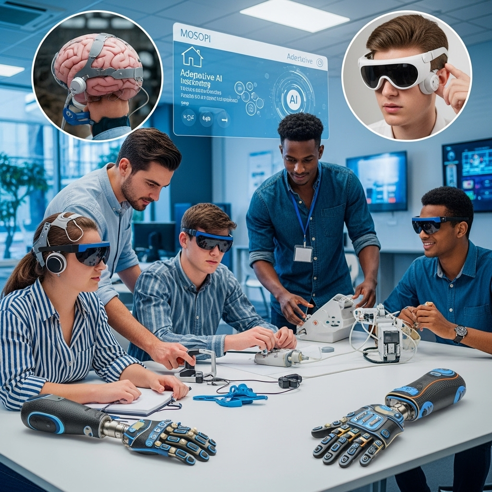
إعداد: ماريا
الوحدة 9
ترجمة لغة الإشارة بالذكاء الاصطناعي
- كاميرات تحلّل حركات اليدين والوجه
- تحوّل الإشارات إلى كلام منطوق أو نص فوري
- تُستخدم في المكالمات، المحاضرات، والخدمات الحكومية
- لا تزال في مراحل التطوير، لكنها واعدة
- تتطلب بيانات تدريبية ضخمة من مستخدمي لغة الإشارة
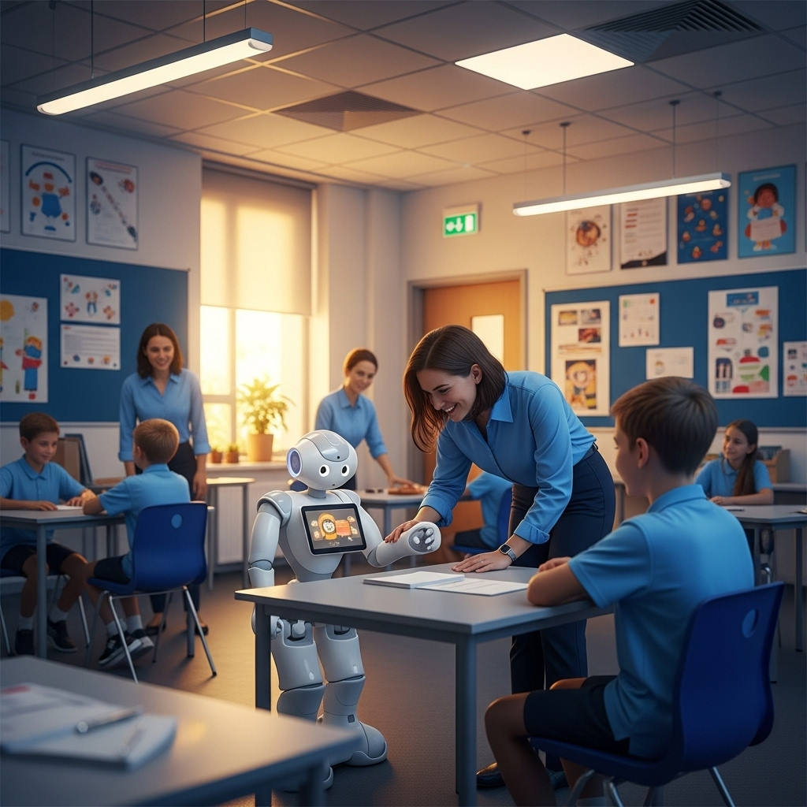
إعداد: ماريا
الوحدة 9
التحديات الأخلاقية
- مخاوف من انتهاك الخصوصية عبر جمع البيانات الحسّاسة
- خطر الاعتماد المفرط على التكنولوجيا
- ضرورة الحفاظ على التفاعل البشري كأساس للدعم
- التحيّز في خوارزميات الذكاء الاصطناعي ضد بعض الفئات
- الحاجة إلى تشريعات تنظيمية واضحة
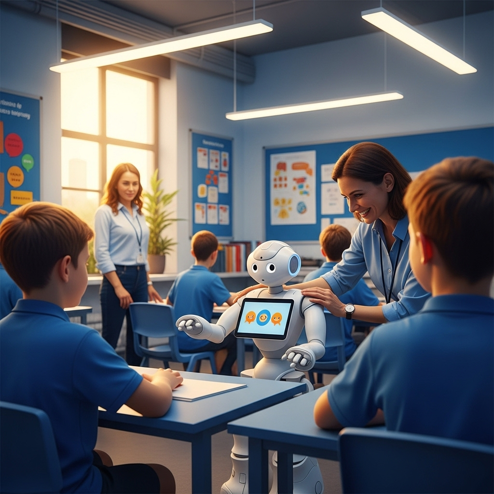
إعداد: ماريا
الوحدة 9
المستقبل الواعد
- واجهات الدماغ-الحاسوب (BCI) للتواصل المباشر
- أطراف صناعية تُعيد الإحساس باللمس
- منازل ذكية تتكيف تلقائيًّا مع احتياجات الساكن
- تقنيات واقع معزز لدعم التنقّل البصري
- التركيز على الحلول منخفضة التكلفة والقابلة للتوسع
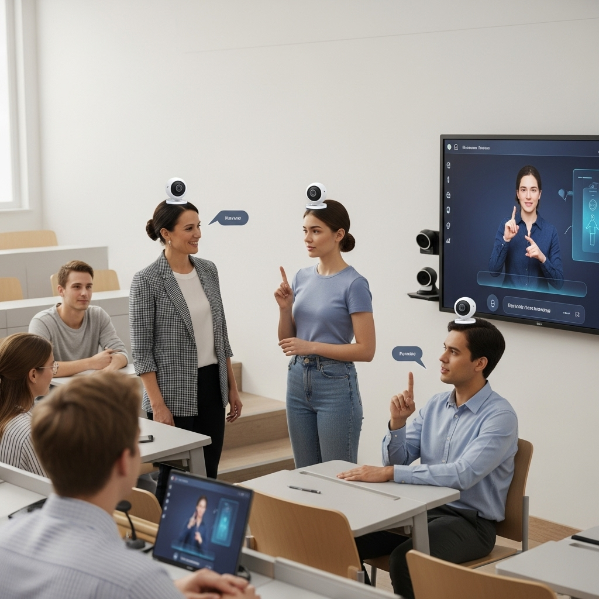
إعداد: ماريا
الوحدة 10
العوائق الرئيسية
- ارتفاع تكلفة الأجهزة المتقدمة
- نقص الوعي المجتمعي بأهمية التقنيات المساعدة
- قلة التدريب المتخصص للمعلمين وأولياء الأمور
- ضعف البنية التحتية الرقمية في بعض المناطق
- غياب سياسات وطنية شاملة للدعم التكنولوجي

إعداد: ريهام
الوحدة 10
الفجوة الرقمية بين الدول
- الدول المتقدمة توفّر دعمًا مجانيًّا أو مدعومًا
- في الدول النامية، يعتمد الكثيرون على التبرعات
- نقص في البحث والتطوير المحلي
- صعوبة الوصول إلى التحديثات والصيانة
- الحاجة إلى حلول مبتكرة منخفضة التكلفة
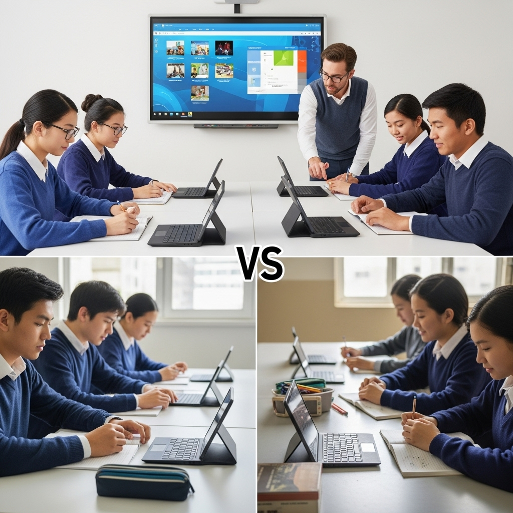
إعداد: ريهام
الوحدة 10
دور السياسات الحكومية
- سن قوانين تلزم المؤسسات بتوفير تقنيات الدعم
- دعم مالي مباشر للأسر أو المؤسسات التعليمية
- إدراج "الوصولية" كشرط في المشتريات الحكومية
- إنشاء مراكز تدريب وطنية للمعلمين والمعالجين
- التعاون مع القطاع الخاص لتوطين الصناعة
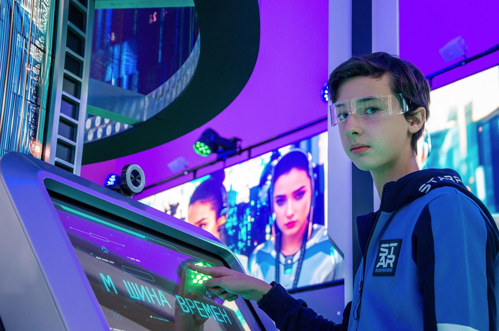
إعداد: ريهام
الوحدة 10
أهمية التصميم الشامل (Universal Design)
- تصميم المنتجات لتكون قابلة للاستخدام من الجميع
- يقلل الحاجة إلى تعديلات خاصة لاحقًا
- ينطبق على المباني، المواقع الإلكترونية، والمناهج
- يُحقق وفورات اقتصادية على المدى الطويل
- يُعزّز ثقافة الشمول من الجذور
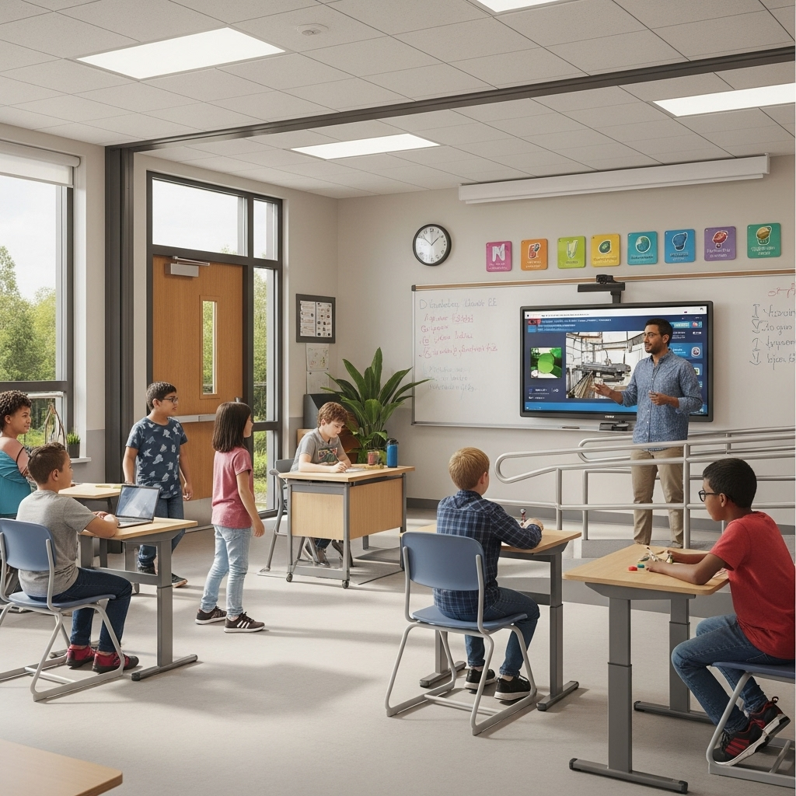
إعداد: ريهام
الوحدة 10
توصيات عملية للمستقبل
- دعم الابتكار المحلي في مجال التقنيات المساعدة
- تدريب المعلمين على استخدام الأدوات الرقمية الداعمة
- تشجيع الشراكة بين الجامعات، الشركات، والمجتمع المدني
- رفع الوعي المجتمعي عبر الحملات الإعلامية
- وضع خطط وطنية استراتيجية للدمج التكنولوجي
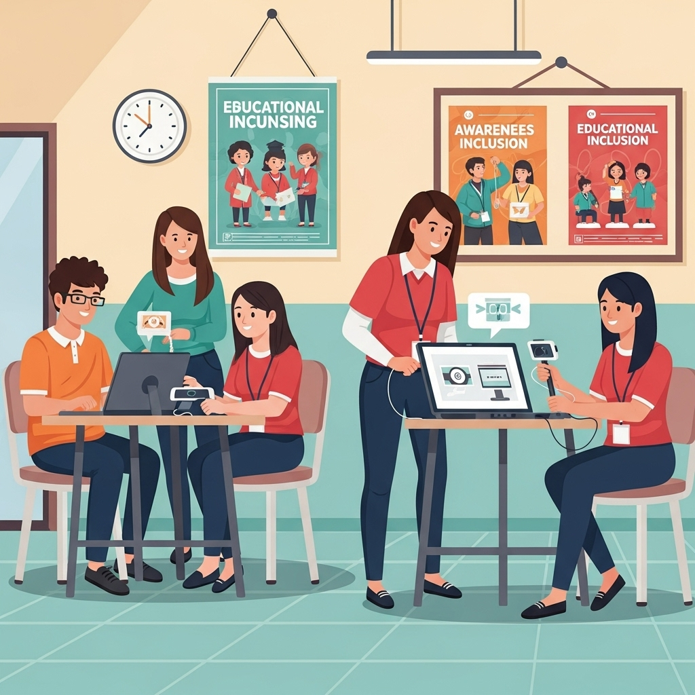
إعداد: ريهام
شكرًا لاهتمامكم
التقنيات المساعدة ليست رفاهية — بل حق إنساني.
معًا نبني بيئة تعليمية وعمل دامجة للجميع.
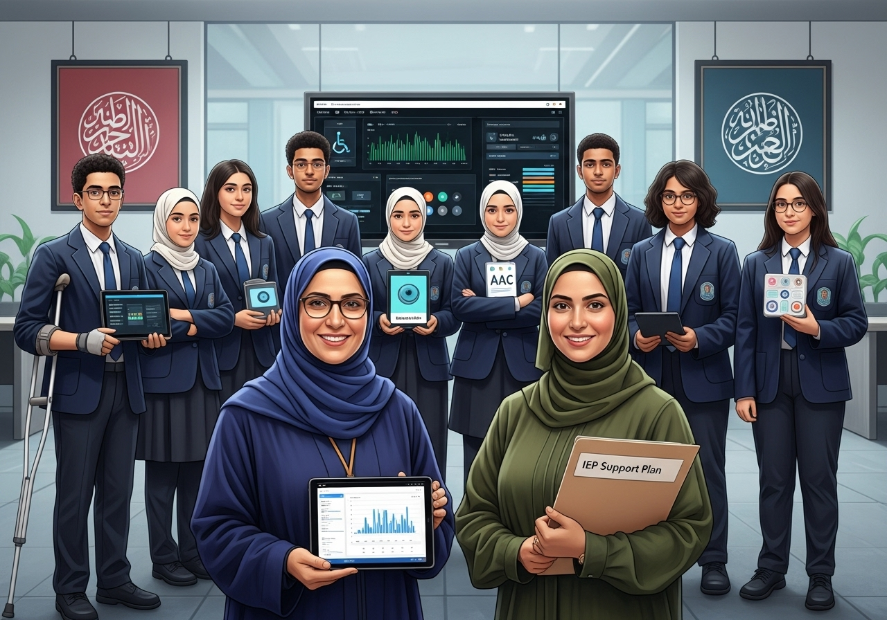
فريق العمل — تحت إشراف د.أمل شعبان / م.سميه سلامة